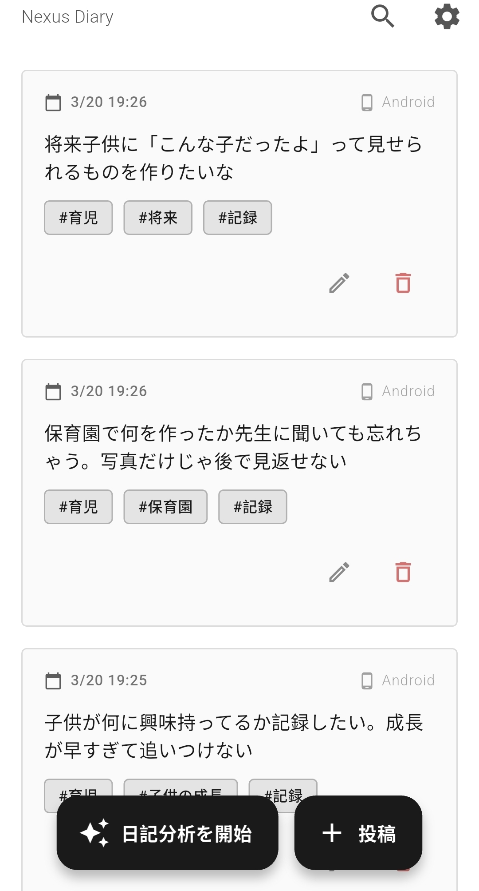
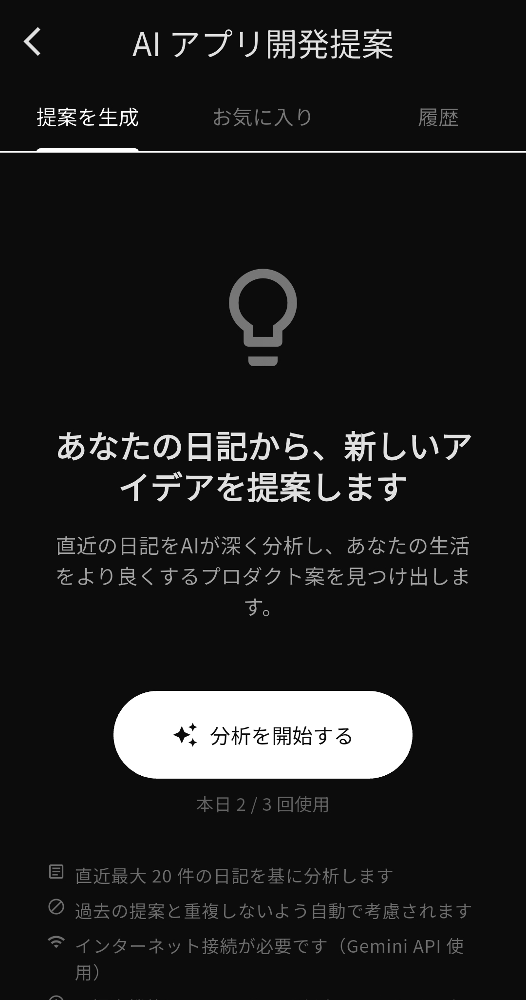
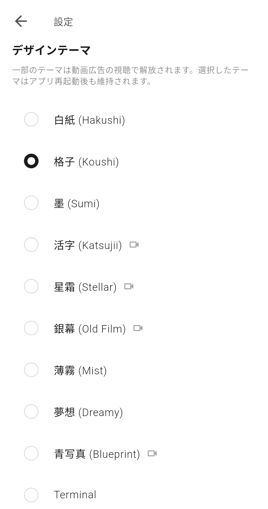
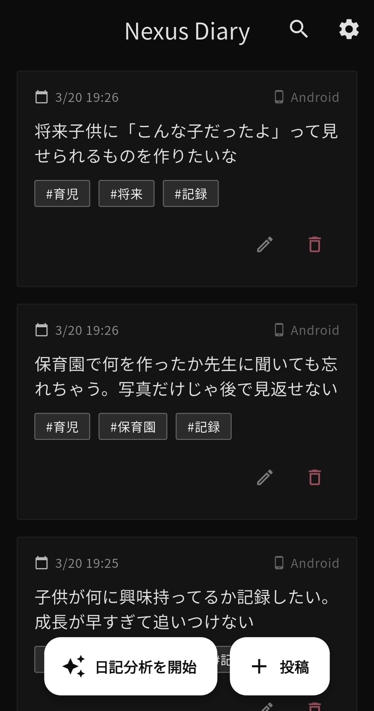
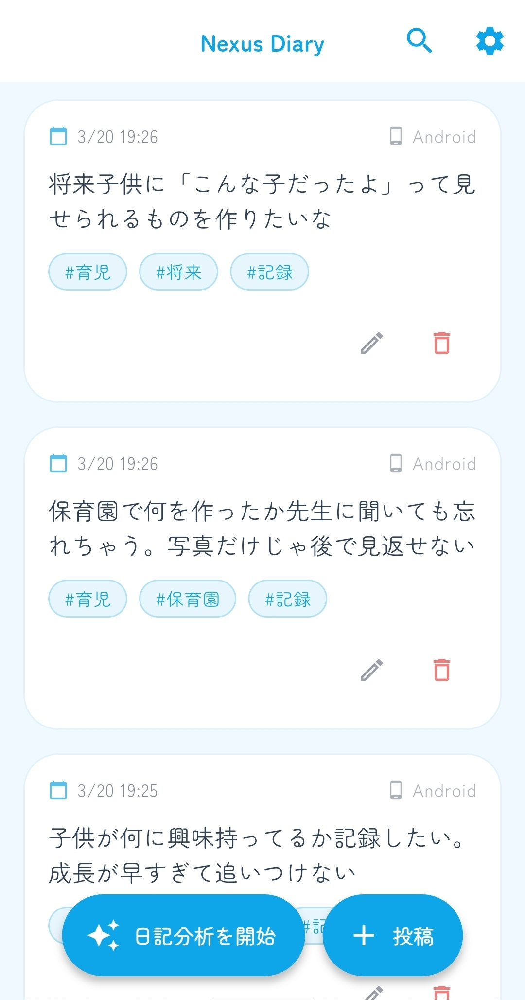
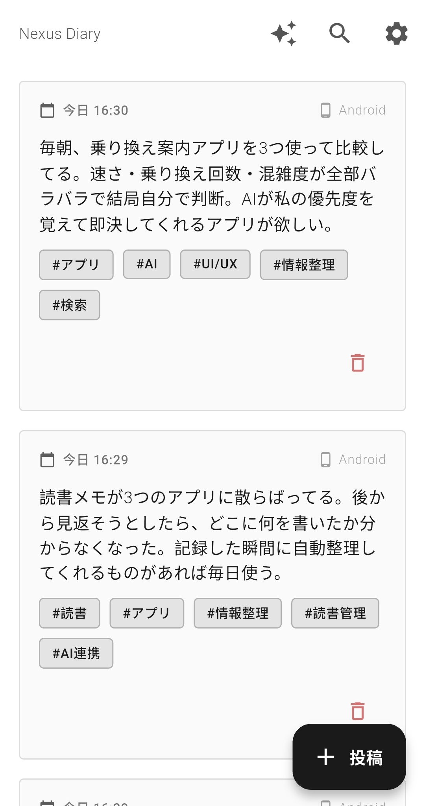
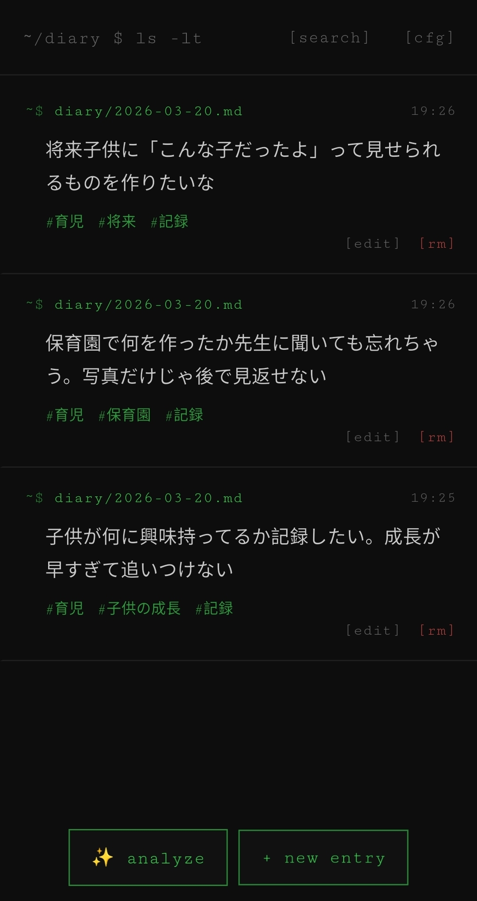

日常の思考を気軽に記録し、AIが次のアイデアを提案する
— あなただけの思考の拠点。
Flutter · Firebase Firestore · Gemini AI
Googleグループに参加後、Play ストアのテストプログラムからクローズドテストに参加できます。
Features
日記をただ書くのではなく、AIが分析・タグ付けし、蓄積された思考から次の開発アイデアを提案します。
Twitter感覚で書けるUIで、日常の思考・アイデアを素早く記録。タイムライン表示で過去の自分と対話できます。
Gemini AIが日記を分析し、タグと感情を自動付与。Firebase Functions経由で処理されるためAPIキーが端末に残りません。
直近の日記から開発アイデアを生成。機能案・実装プロンプトまで提示。1日3回は無料、追加回数は広告視聴で解放。
Firebase Firestoreで端末間同期。Googleアカウントでサインインすれば、端末を変えてもアクセス可。
活字・墨・格子・白紙・Terminal。このページで体験しているように、好みの世界観でアプリを彩れます。
日記データはあなただけがアクセス可能。Firestoreセキュリティルールで他ユーザーからの閲覧を完全遮断します。
Screenshots
← スワイプまたはスクロールで確認できます







Themes
上のバーからテーマを選ぶと、このページ全体の世界観が切り替わります。アプリでも同じ体験を。
Technology